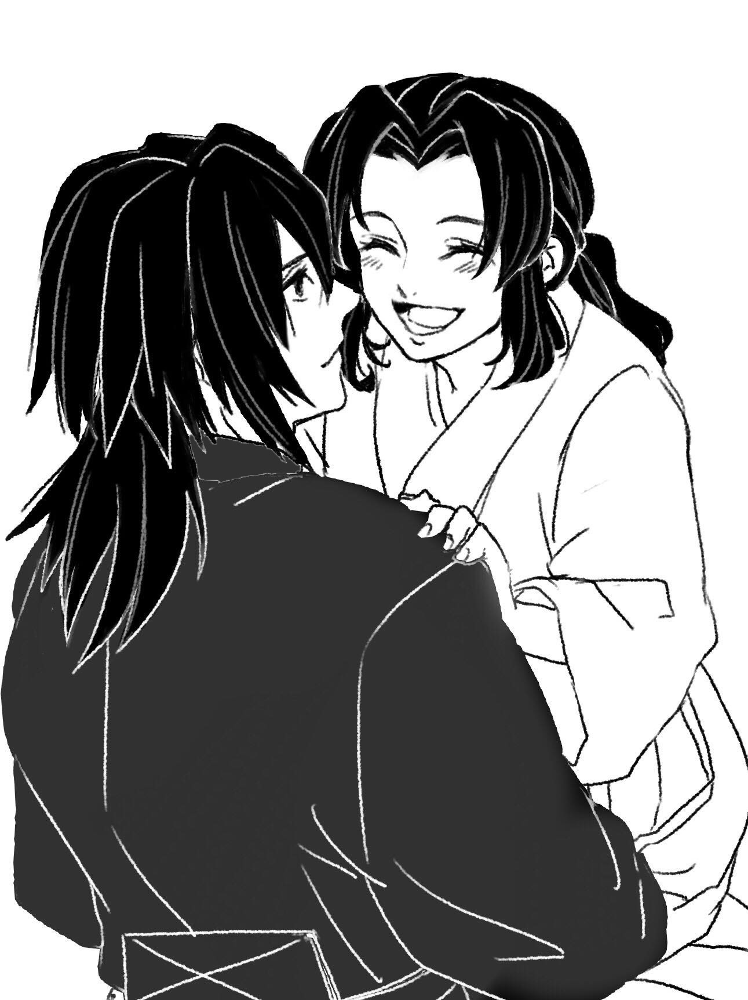

後記
如果你看到這裡，就表示你應該是把這個故事看完了，所以首先我要感謝你((鞠躬
這個連載了將近兩個月的鬼滅義忍學園線，終於結束了~~~
我沒想到我居然會寫學園線的劇情，因為我其實是比較偏好原作大正線的設定
所以最初還以為我不會碰學園這條線，真的要多虧推特上廣大的繪師群給了糧
讓我靈感突現
本來在這之前我是想先寫另一篇大正線的，比較偏輕鬆搞笑一點
結果被學園篇插隊XDD
寫學園篇最煩惱的點就是OOC的部分
我時常寫著寫著就開始糾結這裡好像義勇不像義勇或忍不像忍
尤其義勇的台詞常常被我寫了一長串之後就開始慢慢刪減到以能傳達他語意的最少字數
但整篇看下來義勇還是說了不少話(可是主角不說話是要寫個P...)
文章裡出現不少劍道的術語，我好像都沒做註解((好意思
因為也不是很影響重要劇情，有興趣可以自行估狗...((溜
目前劍道比賽的用語也是沿用日文原文，即使在台灣也不會用中文來唸，所以我也就用日文呈現
如果有劍道系的達人來看我這描寫大概會批到不行((默
對我來說，我希望大家都活得好好的鬼滅學園可以彌補各種在大正線中的遺憾
所以不管點閱率曝光率多低我還是想把它好好寫完
感謝看完這篇故事和後記的大小朋友
